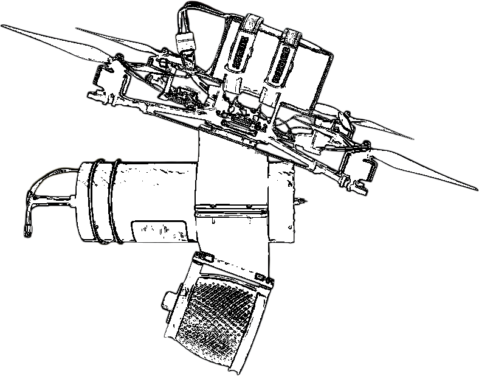

Fiber-Optic Controlled Drones
Fiberoptiske droner bruger kabel til signaloverførsel, hvilket gør dem praktisk talt immune over for jamming eller opsnapning gennem elektronisk krigsførelse.
Begge modeller er udstyret med et fiberoptisk kabel, der giver sikker kommunikation på afstande op til 15 km.
fiber-optic